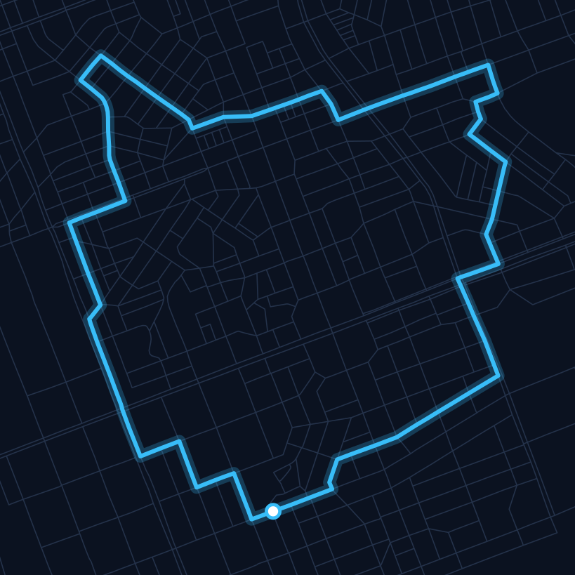
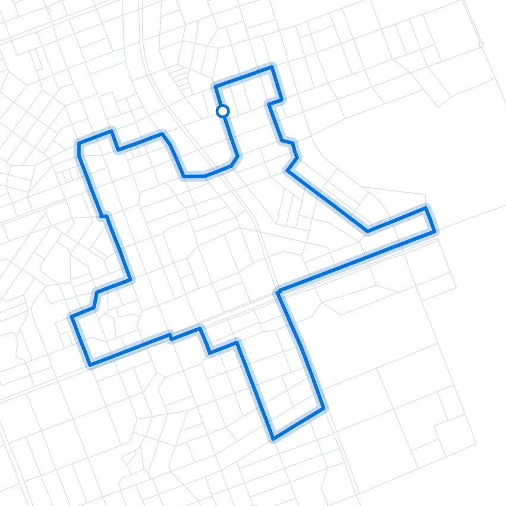
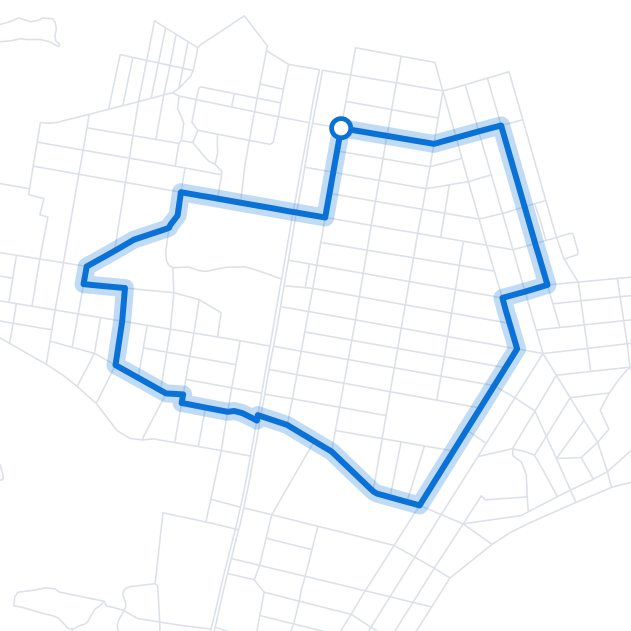
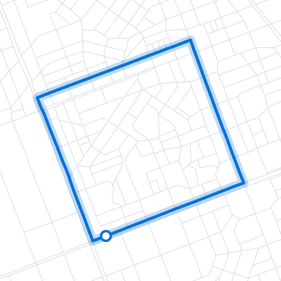

그림과 거리만 고르면
우리 동네 실제 길에서
그림 러닝 코스를 찾아 드려요.
실제 생성 코스 · 고양이 7.1km
서울 강남 · OpenStreetMap 도로
하트·별·고양이 또는 직접 그린 모양과 거리를 고르면, 동네 길에 맞춰 코스를 찾아요.
지도와 음성이 길을 안내하고, 달린 경로와 시간을 기록해요.
달린 선이 작품이 되어 작품방에 걸려요. 이미지로 저장하고 공유할 수 있어요.



모두 앱이 실제 도로 데이터로 찾은 한붓 코스입니다. 출발점(흰 점)으로 다시 돌아와요.